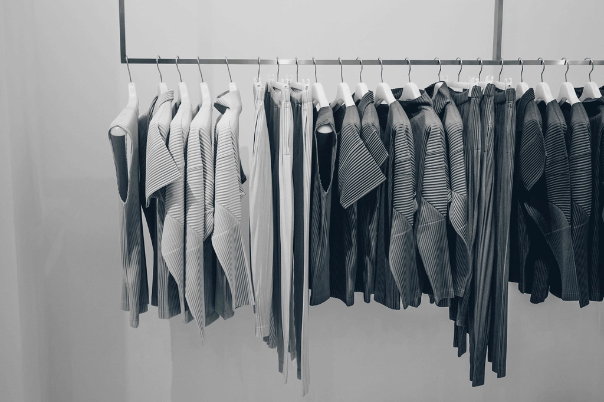

Autoconhecimento
Avaliação de Estilo Pessoal
Descobrir o nosso estilo pessoal não é sobre seguir tendências, é sobre descobrir quem somos e permitir que a nossa imagem fale por nós.
Partimos dos 7 Estilos Universais para encontrar aquilo que realmente faz sentido para ti: a tua energia, a tua essência e a forma como desejas sentir-te e ser vista todos os dias.
Prático
Tradicional
Elegante / Contemporâneo
Romântico
Sexy
Criativo
Dramático / Moderno